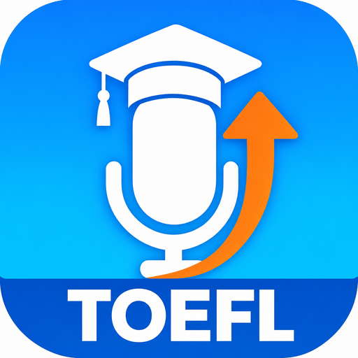
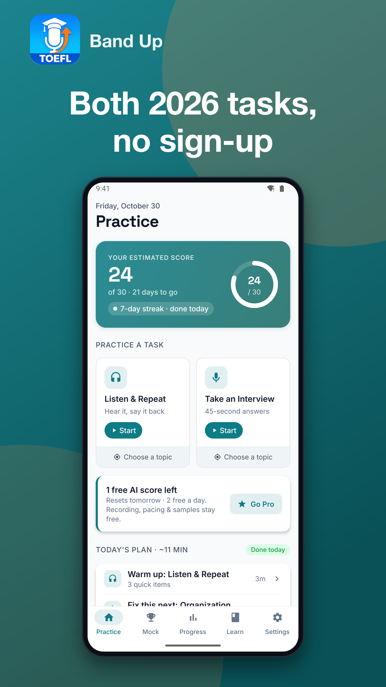
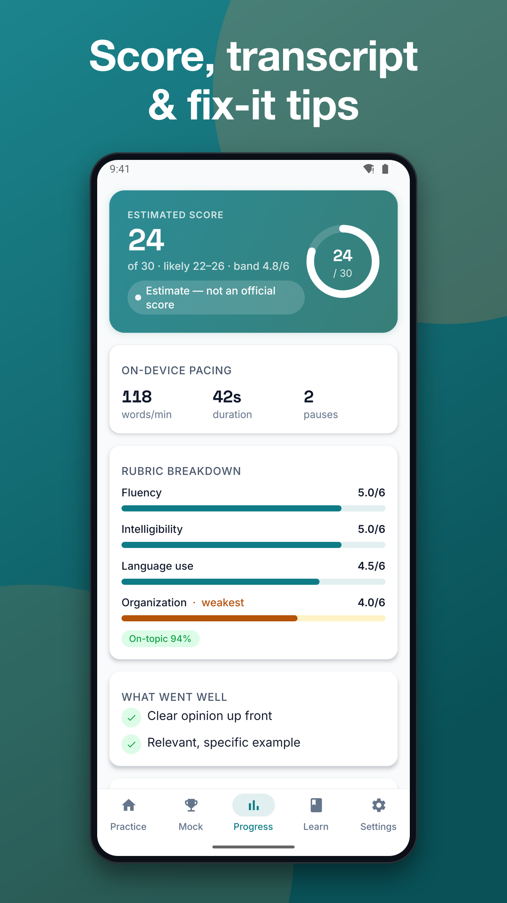
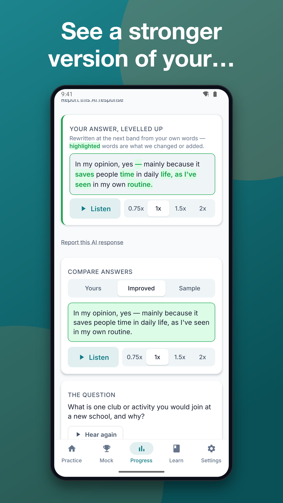
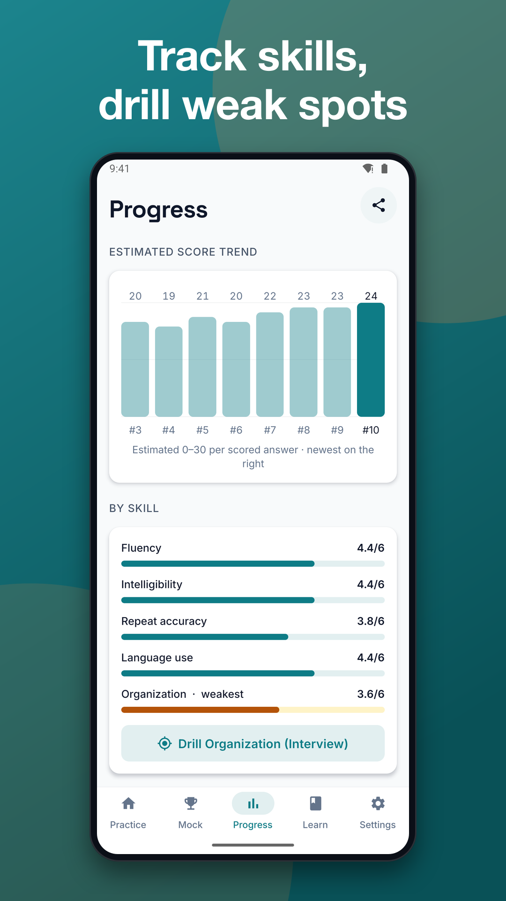
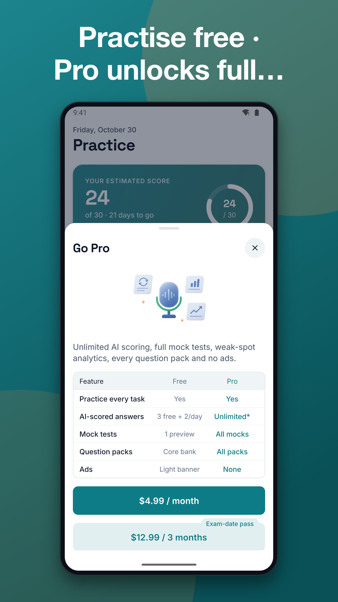

TOEFL Preparation App
TOEFL speaking practice with instant AI score, transcript and feedback





Band Up is a TOEFL preparation app that coaches your speaking with instant AI feedback on every answer. Practise the new Listen & Repeat and Take an Interview tasks, then see an estimated score, your transcript and exactly what to fix next.
WHY CHOOSE THIS TOEFL PREPARATION APP
Most candidates practise alone and never learn how they would score. Band Up gives you a rubric-level answer in seconds, so every minute of practice has a clear next step. You can start practising right away, and signing in is optional.
TOEFL SPEAKING PRACTICE AI THAT EXPLAINS YOUR SCORE
• Estimated 0-30 and 1-6 speaking score, always labelled as an estimate
• Transcript of what you actually said
• Strengths and weaknesses across fluency, intelligibility, grammar, vocabulary, organization and pacing
• Relevance check on Interview answers
• An improved answer rewritten from your own words, with the edits highlighted
• Side-by-side tabs: Yours, Improved, Sample
• Native-voice audio for sample and improved answers at 0.75x, 1x, 1.5x and 2x
EXAM-STYLE TOEFL SPEAKING TASKS
• Listen & Repeat: 7 items that get harder, no prep time, and short pauses do not cut your answer off
• Take an Interview: four questions on one topic with 45-second answers; tap Done to finish early
• 100+ questions per task, tagged by topic and difficulty
• Word-by-word comparison against the target sentence
• Visible countdown and level meter while you speak
TOEFL MOCK TEST FOR THE SPEAKING SECTION
Run a full speaking mock (7 Repeat items and 4 Interview questions) on an exam-style screen with no hints, then get one report with your estimated section score, strengths and a study plan. Use this TOEFL preparation app to repeat mocks as your test date gets closer.
TOEFL SPEAKING TEMPLATES AND MINI-LESSONS
• Answer templates, linking phrases and quick quizzes for Interview answers
• Chunking tips for Repeat
• Save useful phrases to your own list
PROGRESS AND DAILY HABIT
• Score trend and weak-spot breakdown, with a "Drill this" button
• First-versus-latest comparison on the same task
• Exam-date countdown, a daily plan of about 10 minutes and a streak
• Optional reminders you can switch off by type
• Optional progress card to share
FREE VS PRO
Free:
• Every task type and all included questions
• Timers, live transcript, sample answers with audio and history
• 3 AI-scored attempts, then a limited number per day via an optional rewarded ad
• Basic pacing report (duration, words per minute, pauses)
• Preview of your first mock, dark theme and speed control
Pro (1-month pass, 3-month pass, yearly plan with trial, or lifetime option):
• Unlimited AI scoring and answer rewrites
• All mock tests and weak-spot analytics
• Extra question packs
• Free version shows ads; Pro removes them
• Optional cloud backup
Prices, billing period, what is included and how to cancel are shown before you buy. Restore purchases is available.
PRIVACY
• No audio is saved — answers are transcribed on your phone
• AI scoring needs an internet connection: only the text transcript of your answer is sent to our server — your voice is turned into text on your phone and audio never leaves it
• Your practice history is saved on your phone; if you sign in, it is also backed up to our server so you can restore it on a new phone
• Signing in with an email code is optional. AI scoring sends the text of your answer through our server to an AI provider (Anthropic) — never your audio — and it is not used for training
• You can delete any attempt or all your data in Settings
IMPORTANT
Scores and feedback are AI-generated estimates and may contain errors. They are not official scores. Band Up is independent and is not affiliated with or endorsed by the owner of the TOEFL test. TOEFL is a trademark of its respective owner.
Download this TOEFL preparation app, answer your first question and see your estimated speaking score today.
Support: jeets98e@gmail.com